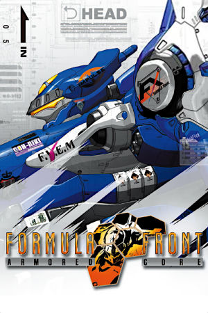

PlayStation 2 (Japan only), PlayStation Portable
Originally released exclusively in Japan for the PlayStation Portable on December 12th, 2004, Armored Core: Formula Front was later brought to the PlayStation 2 in 2005, released in Japan and South Korea. The game would eventually reach Western markets starting with North America in December 2005 as Armored Core: Formula Front Extreme Battle. Formula Front marked the first time FromSoftware's long-running mecha series appeared on a handheld console. Instead of piloting an AC directly as in the mainline games, Formula Front puts players in the role of an AC manager and architect, assembling and tuning machines and then programming the artificial intelligence that controls them in the arena. The North American PSP release additionally allows the option of manually piloting the AC, a feature absent from the Japanese versions.
The gameplay revolves around building your own mech from a deep catalog of parts, buying and installing chips to shape your AI's combat behavior, and watching your creations fight in the Formula Front league against rival teams. The Western release's manual override option gives the game a hybrid of strategy-management and classic Armored Core action. While modest, the PSP release demonstrated the series' flexibility and was an important stepping stone that proved Armored Core could work outside the PlayStation 2, paving the way for future portable entries in the franchise.
FromSoftware
- Official developer website.
Armored Core Wiki
- Contains lots of useful information about Armored Core games.
PPSSPP - The best PSP
emulator.
Armored Core: Formula Front Manual (JP, PSP)
- PDF copy of the PSP manual in Japanese.
Armored Core: Formula Front Manual (JP, PS2)
- PDF copy of the PS2 manual in Japanese.
Armored Core: Formula Front International Manual (JP, PSP)
- PDF copy of the PSP international manual in Japanese.
Analog Controls Mod
- A mod that allows Armored Core: FF to properly utilize dual analog stick controls.
Steam Grid DB (ACFF) - Contains lots of cool options for artwork that can be used in your Steam library.